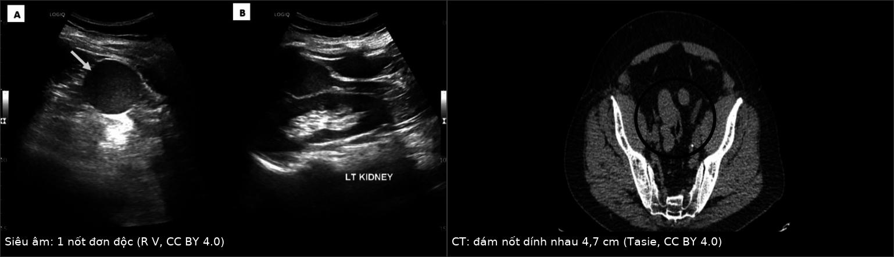
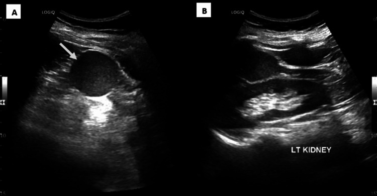
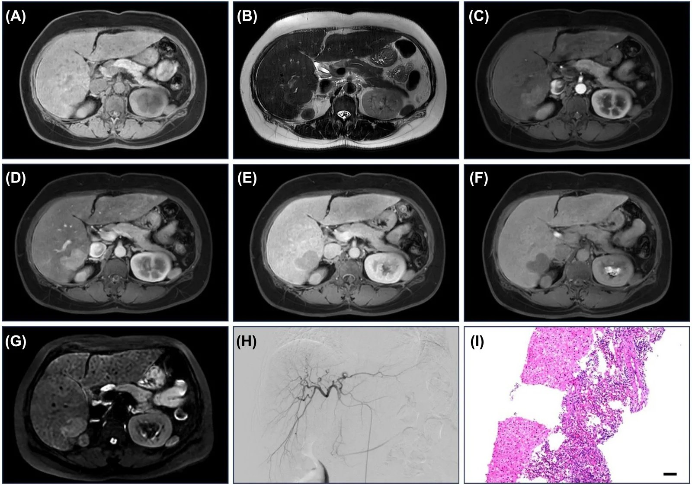
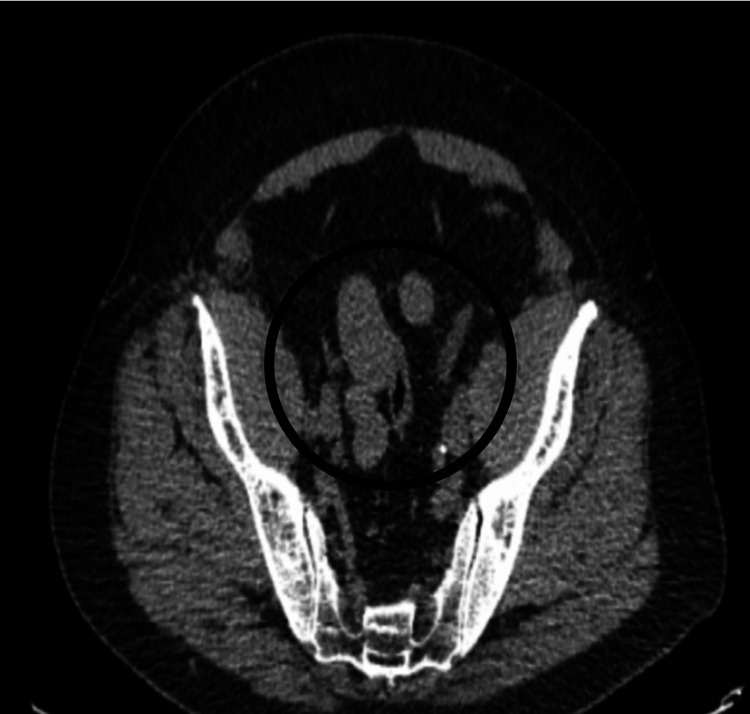

192 — Splenosis & lách phụ phì đại sau cắt lách: "giả di căn" nguy hiểm nhất của ổ bụng
Tags: pattern:not-ngam-thuoc pattern:dam-not-phuc-mac pattern:gia-di-can pattern:not-gan vung:lach vung:gan vung:phuc-mac vung:hoc-lach protocol:CEUS protocol:MRI-gan-tuong-phan protocol:xa-hinh-HDRBC
Mức chắc chắn (certainty): tổng hợp y văn (literature synthesis) — 1 bài tổng quan có hệ thống về CEUS của mô lách lạc chỗ (Diagnostics 2026, PMC13115550, CC BY 4.0), 1 loạt 11 ca splenosis trong gan (Curr Med Imaging 2026, PMC13584078), 2 ca nguyên văn có ảnh (PMC13262777, PMC12700140), 1 ca CT giả di căn (PMC13466073) và 2 ca chứng minh bẫy PET (PMC12888567, PMC12582902). Không có nghiên cứu tiến cứu; các con số dịch tễ đều từ y văn giải phẫu bệnh/loạt ca.
Câu chốt: splenosis là mô lách tự cấy sau vỡ/cắt lách, gặp tới 67% người sau chấn thương lách — nó tăng tưới máu, hạn chế khuếch tán, ngấm thuốc kiểu lách ở mọi thì, tức là giống u ác về mọi mặt trừ nguồn gốc. Hậu quả thật: 63% ca splenosis trong gan từng bị mổ và chỉ 15,5% được chẩn đoán đúng ngay từ đầu (PMC13115550). Chốt chẩn đoán không phải hình thái nốt, mà là bằng chứng mô lách chức năng: CEUS ngấm kéo dài ≥ 5 phút (tỉ lệ tín hiệu lách còn 99% ở phút thứ 5) hoặc ⁹⁹ᵐTc-HDRBC/SPECT-CT.
1. Tổng quan bệnh học – cơ chế hình ảnh (TẠI SAO)
1.1 Hai thực thể khác nguồn gốc, chung một câu hỏi
- Lách phụ (accessory spleen) — bẩm sinh: đảo mô lách tách ra trong quá trình xoay ruột, thường 10–20% người trưởng thành; đa số chỉ 1 lách phụ, 8–20% có 2–3. Loạt 3.000 tử thiết của Halpert & Györkey: 311 người (10,5%) có 364 lách phụ, trong đó 61 (16,7%) nằm trong tụy — tức 2% toàn bộ người được khám, 100% ở đuôi tụy (PMC13115550).
- Splenosis — mắc phải: mô lách sống sót rơi vào ổ phúc mạc/màng phổi sau vỡ lách, chấn thương bụng, cắt lách, bám vào bề mặt có mạch máu, hình thành mạch nuôi kiểu mạch ký sinh (parasitic supply). Gặp tới 67% người sau vỡ lách chấn thương và cắt lách; 94,6% ca splenosis trong gan có tiền sử chấn thương/cắt lách (PMC13115550). Xuất hiện sau nhiều tháng tới nhiều năm (PMC13262777).
- Vì sao khó phân biệt với ung thư: mô lách là cơ quan tưới máu nhiều nhất trên mỗi gram, nên nốt splenosis bắt thuốc mạnh ở thì động mạch, đặc biệt ở nhu mô gan/đuôi tụy — đúng kiểu hình của HCC, di căn tăng sinh mạch, u thần kinh nội tiết tụy. Không có vỏ, không có hiệu ứng khối lớn: nốt ép/gặm cơ quan chủ (dấu "embedded organ sign" âm tính, "beak sign" âm tính) (PMC12700140).
1.2 Vật lý của 4 phép đo quyết định
| Phép đo | Cơ sở vật lý/sinh lý | Ngưỡng đọc | Nguồn |
|---|---|---|---|
| CEUS (SonoVue) | mô lách giữ vi hạt trong hệ nội mô võng (RES) và có dòng xoang chậm → ngấm kéo dài | lách 99% tín hiệu ở 5 phút trong khi gan và thận giảm; ≥ 5 phút = mạnh gợi ý mô lách | PMC13115550 |
| ⁹⁹ᵐTc-HDRBC (hồng cầu bị gia nhiệt) | 90% hồng cầu đánh dấu bị tế bào RES của lách bắt giữ → độ tập trung lách gấp 2–4 lần gan | ổ tăng tập trung khớp vị trí nốt trên SPECT-CT | PMC13115550; PMC13584078 |
| MRI gadoxetate (HBP) | mô lách không có tế bào gan → không bắt gadoxetate | tất cả tổn thương giảm tín hiệu ở thì gan mật (8/11 ca được chụp gadoxetate) | PMC13584078 |
| DWI/ADC | tủy trắng lách giàu tế bào lympho → hạn chế khuếch tán thật | DWI sáng, ADC thấp như mô lách — không loại trừ splenosis | PMC13262777 |
- Hệ quả thực hành: một nốt tăng tưới máu + hạn chế khuếch tán + không có vỏ ở người đã cắt lách không đủ để gọi là di căn. Câu hỏi đúng là: "nốt này có mô lách chức năng không?" — trả lời bằng thuốc đặc hiệu cho RES (HDRBC, CEUS) hoặc pha gan mật (âm tính).
- Vì sao splenosis "mọc" ở những chỗ lạ: mảnh lách đi theo dịch phúc mạc (mạc treo, phúc mạc thành, hố chậu, mặt dưới cơ hoành), theo vết thương xuyên cơ hoành → lồng ngực, hoặc theo đường máu tới gan; hiếm gặp ở não/mô dưới da (PMC13115550; PMC13466073).
1.3 Hậu quả lâm sàng (không chỉ là "bất thường vô hại")
- Bị mổ oan: 63% ca splenosis trong gan trong y văn được phẫu thuật vì không xác nhận được bằng hình ảnh/sinh thiết; trong 80 ca công bố 1993–2025, 57% chẩn đoán nhờ mổ và 21% nhờ sinh thiết (PMC13115550). Loạt 11 ca gần đây: 2 ca bị chẩn đoán nhầm HCC vì AFP tăng, thoát mổ nhờ sinh thiết (PMC13584078).
- Chảy máu: nốt splenosis dưới bao gan/mặt phúc mạc vỡ có thể gây máu trong ổ bụng; sinh thiết kim vào đúng nốt này là nguy cơ chảy máu thật, không phải "thủ thuật vô hại".
- Tái phát bệnh nền: splenosis phì đại sau cắt lách có thể đủ chức năng để tái phát ITP — đã có ca ITP kháng trị tái phát kèm splenosis ổ bụng (PMC11910191); với tân sinh máu, mô lách còn lại không thay thế được lách về miễn dịch.
- Bẫy hình ảnh chức năng: mô lách bắt ⁶⁸Ga-DOTATATE và PSMA — splenosis lồng ngực/chậu từng bị đọc là di căn trên PET PSMA và PET thụ thể somatostatin (PMC12888567; PMC12582902).
2. Mẫu hình + chẩn đoán phân biệt theo VỊ TRÍ (Gamut)
- Hố lách/cạnh lách: nốt đồng âm/đồng tín hiệu với lách, bờ nhẵn, có mạch vào–ra rốn lách; lách phụ 9 mm ở mặt trên thận trái từng bị nghi u thận (PMC13115550). Sau cắt lách: cùng vị trí lách cũ → splenosis thể đơn độc, 25 mm, 46 mm (PMC13262777; PMC13115550).
- Trong gan (khó nhất): nốt 1,0–4,2 cm, thường dưới bao, một hoặc nhiều ổ; có thể "fast in – fast out" giống HCC (PMC13584078). Gamut: HCC, di căn, adenoma, FNH, hemangioma, splenosis.
- Phúc mạc/mạc treo/hố chậu: đám nốt dính nhau ("omental cake") — gamut: di căn phúc mạc, carcinomatosis, lymphoma, lao phúc mạc, endometriosis, splenosis. Ca thật: chùm nốt mô mềm dưới bụng, nốt lớn nhất 4,7 cm, dính nhau (PMC13466073).
- Trong tụy (đuôi): lách phụ trong tụy — gamut: u thần kinh nội tiết tụy, u đặc–nhầy nhú, ung thư tụy; đặc điểm gợi ý: đồng tín hiệu với lách ở mọi thì, mạch nuôi từ lách, không cản trở ống tụy.
- Lồng ngực/màng phổi: splenosis màng phổi sau vỡ lách + rách cơ hoành — gamut: u phổi, di căn màng phổi, mesothelioma; < 10–15% có triệu chứng (đau ngực, ho ra máu) (PMC13115550).
- Thận/sau phúc mạc: nốt cạnh thận từng bị nghi u thận → cắt thận oan (PMC13466073 thảo luận; PMC13115550).
3. Bảng so sánh phân biệt (ma trận đối chiếu)
| Thực thể (entity) | Hình ảnh điển hình | Chốt vào (rule-in) | Chốt loại (rule-out) | Gợi ý xác nhận |
|---|---|---|---|---|
| Splenosis | Nốt/đám nốt bờ nhẵn, đồng tín hiệu với lách trên T1/T2, ngấm mạnh thì động mạch, ngấm kéo dài, giảm tín hiệu pha gan mật, DWI sáng/ADC thấp | Tiền sử vỡ/cắt lách + CEUS ngấm ≥ 5 phút hoặc HDRBC dương | Nốt có vỏ, hoại tử trung tâm, xâm lấn mạch, hạch mới → không phải splenosis | ⁹⁹ᵐTc-HDRBC + SPECT/CT; CEUS 5 phút; MRI gadoxetate |
| Lách phụ | Nốt < 3 cm cạnh rốn lách/đuôi tụy, đồng âm – đồng tín hiệu tuyệt đối với lách, có mạch rốn | Mạch vào–ra kiểu rốn lách + tín hiệu y hệt lách | Không thấy mạch nuôi kiểu lách + tăng sinh mạch bất thường → nghĩ u | CEUS, MRI; theo dõi 3–6 tháng nếu không chắc |
| HCC | Nốt trong gan xơ, ngấm mạnh thì động mạch + thải thuốc, có vỏ, có huyết khối tĩnh mạch cửa | Ngấm động mạch + washout + vỏ + AFP tăng tiến triển | Ngấm kéo dài, pha gan mật giảm tín hiệu nhưng CEUS > 5 phút → không phải HCC | LI-RADS trên CT/MRI đa thì; sinh thiết nếu vẫn không chắc |
| Di căn phúc mạc | Nốt phúc mạc nhiều ổ, dày mạc nối, cổ trướng, hạch, u nguyên phát | Cổ trướng + tổn thương nguyên phát + nốt không đồng tín hiệu lách | Nốt đồng tín hiệu lách + không cổ trướng + CEUS kéo dài → splenosis | CT bụng–chậu có cản quang, PET/CT, giải phẫu bệnh có hướng |
| Lymphoma | Hạch/đám mô mềm đồng đậm độ, không canxi, bắt thuốc đồng nhất, nhiều tầng hạch | Nhiều hạch ở nhiều trạm + LDH tăng + PET dương mạnh | Tổn thương giảm tín hiệu pha gan mật ở người cắt lách → nghĩ splenosis | Sinh thiết hạch, PET/CT |
| U thần kinh nội tiết tụy | Nốt đuôi tụy tăng tưới máu mạnh, có thể di căn gan/hạch | Bắt DOTATATE mạnh + tăng chromogranin A | Đồng tín hiệu lách trên mọi chuỗi + mạch nuôi kiểu lách → lách phụ | EUS + CEUS, DOTATATE; không sinh thiết mù |
| U thận (RCC) | Khối thận xâm lấn/xuất phát từ nhu mô thận, ngấm không đồng nhất, có thành phần hoại tử | Dấu hiệu xuất phát từ thận, méo nhu mô thận | Khối ép mặt thận, tín hiệu như lách, CEUS kéo dài → splenosis | MRI, CEUS; tránh cắt thận trước khi loại splenosis |
| Endometriosis/IMT | Nốt phúc mạc/hố chậu, ngấm thuốc chậm, đau chu kỳ; IMT có viền ngấm | Triệu chứng chu kỳ + tổn thương chậu + không có tiền sử cắt lách | Tiền sử cắt lách + đồng tín hiệu lách → splenosis | MRI chậu, theo dõi; sinh thiết chọn lọc |

Trái (A–B): siêu âm — hố lách trống (đã cắt lách), một nốt đồng âm với lách nằm sát cực trên thận trái. Phải: CT khung chậu — chùm nốt mô mềm dính nhau, nốt lớn nhất tới 4,7 cm, bị đọc là "di căn hoặc lymphoma". Cùng một bệnh, hai bộ mặt: một nốt và giả carcinomatosis. Nguồn: R V và cs. (CC BY 4.0, PMC13262777); Tasie J và cs. (CC BY 4.0, PMC13466073). Ảnh ghép letterbox, giữ tỉ lệ.4. Protocol + lưu đồ chẩn đoán
4.1 Thứ tự phép đo (rẻ, không xâm lấn → đặc hiệu)
- Siêu âm B-mode + Doppler (đầu tay): tìm lách phụ ở hố lách/đuôi tụy, nốt đồng âm, mạch rốn lách; ghi kích thước (mm).
- CEUS với SonoVue: đặt pha động mạch (10–30 giây), pha tĩnh mạch (30–60 giây) và đọc lại ở phút thứ 5; ngấm kéo dài ≥ 5 phút ở nốt đồng âm với lách = mô lách (PMC13115550).
- MRI gan mật: T1 in/out-phase, T2 FS, DWI + ADC, động học gadolinium, và pha gan mật bằng gadoxetate khi nghi nốt trong gan — mô lách giảm tín hiệu ở pha gan mật (PMC13584078).
- ⁹⁹ᵐTc-HDRBC ± SPECT/CT — "chuẩn vàng không xâm lấn" khi cần chốt dứt điểm; ổ tập trung gấp 2–4 lần gan khớp đúng vị trí nốt (PMC12700140; PMC13584078).
- DSA chỉ khi vẫn còn tranh cãi: splenosis trong gan có mạch nuôi ký sinh từ động mạch hoành/liên sườn, khác kiểu cấp máu HCC (PMC13584078).
- Sinh thiết: chỉ khi đã loại splenosis hoặc khi kết quả sẽ đổi điều trị; tránh với nốt dưới bao/dễ chảy máu.
4.2 Lưu đồ: nốt tăng tưới máu ở người đã cắt lách
flowchart TD
A[Not tang tuoi mau o nguoi da cat lach] --> B{Co tien su vo lach, chan thuong, cat lach}
B -->|Khong| C[Xu ly nhu u: CT hoac MRI dong hoc, can nhac sinh thiet]
B -->|Co| D[Sieu am + Doppler: noi tang am, mach ron lach]
D --> E[CEUS: doc lai o phut thu 5]
E --> F{Ngam keo dai tren 5 phut}
F -->|Co| G[Coi la mo lach: khong sinh thiet, khong mo]
F -->|Khong| H{MRI gadoxetate: pha gan mat}
H -->|Giam tin hieu| I[Nghi splenosis, chot bang HDRBC SPECT CT]
H -->|Dong hoac tang tin hieu| J[Nghi HCC, FNH hoac u khac: LI-RADS, sinh thiet, MDT]
I --> K[Theo doi 3 den 6 thang neu khong trieu chung]
C --> K
4.3 Khi nào điều trị
- Không triệu chứng: không mổ, không sinh thiết — theo dõi 3–6 tháng bằng siêu âm/CEUS hoặc MRI; splenosis không tiến triển thành ung thư.
- Có triệu chứng (chảy máu, tắc ruột, đau, tái phát ITP): cắt nốt chọn lọc hoặc nút mạch; với splenosis phì đại gây ITP tái phát, cắt phần mô lách hoạt động là lựa chọn sau khi xác định bằng HDRBC (PMC11910191).
5. Biến thể bình thường và cạm bẫy
- Lách phụ là biến thể bình thường (10–20%), không phải bệnh; đừng gọi "u đuôi tụy" khi nốt < 3 cm, đồng tín hiệu lách, có mạch rốn lách.
- Hạn chế khuếch tán KHÔNG loại trừ splenosis: mô lách có DWI sáng/ADC thấp thật (PMC13262777) — dùng DWI để phân biệt u ác ở đây là bẫy kinh điển.
- "Fast in – fast out" trong gan KHÔNG loại trừ splenosis: loạt 11 ca mô tả ngấm không đều kiểu vào nhanh–ra nhanh, đúng như HCC (PMC13584078). Chốt là thuốc đặc hiệu mô lách, không phải kiểu ngấm.
- AFP tăng không đồng nghĩa HCC: 2/11 ca bị chẩn đoán nhầm HCC vì AFP tăng; xơ gan nền làm AFP tăng "vô tội vạ".
- PET có thể dương giả: mô lách bắt PSMA và DOTATATE → splenosis lồng ngực/chậu bị đọc là di căn (PMC12888567; PMC12582902). Người đã cắt lách + nốt bắt mạnh DOTATATE/PSMA phải đối chiếu vị trí với ổ chấn thương cũ.
- Sinh thiết nốt dưới bao gan = nguy cơ chảy máu, và mô lách dễ vỡ; nếu CEUS/HDRBC đã dương thì không sinh thiết.
- Đừng bỏ sót lách phụ khi cắt lách vì ITP: lách phụ bỏ sót là nguyên nhân thất bại cắt lách — đếm và ghi vị trí trước mổ.
- Splenosis lồng ngực thường không triệu chứng; chọc kim xuyên thành ngực vào nốt này là nguy cơ ho ra máu — ưu tiên HDRBC.
6. Tự lượng giá — Blind Quiz
Ca 1 — Nữ 40 tuổi, cắt lách sau tai nạn 10 năm trước, siêu âm kiểm tra định kỳ.

- Gợi ý: (A) hố lách; (B) cực trên thận trái — cùng một nốt.
- Câu hỏi: mô tả âm vang và bờ nốt; 3 chẩn đoán phân biệt; phép đo nào chốt mà không cần sinh thiết?
Bấm để hiện đáp án
- Dấu hiệu: hố lách trống (đã cắt lách); nốt bờ nhẵn, đồng âm với nhu mô lách, nằm sát cực trên thận trái, không có thành phần nang/hoại tử.
- Chẩn đoán: splenosis thể đơn độc (solitary). Chốt: tiền sử cắt lách + đồng âm tuyệt đối với lách + CEUS ngấm kéo dài ≥ 5 phút; nếu còn nghi → ⁹⁹ᵐTc-HDRBC/SPECT-CT.
- Phân biệt: u thận (khối xuất phát từ nhu mô thận), lymphadenopathy, u mô mềm sau phúc mạc.
- Nguồn ảnh: R V, Sai V, Govindarajan A, Kumar DC. Cureus 2026 — PMC13262777, CC BY 4.0.
Ca 2 — Nam 49 tuổi, khối 2,3 cm gan phải, xơ gan nhẹ: HCC hay không?

- Gợi ý: (A) T1, (B) T2, (C) động mạch, (D) tĩnh mạch cửa, (E) muộn, (F) pha gan mật, (G) DWI, (H) chụp mạch gan chọn lọc, (I) mô bệnh học.
- Câu hỏi: ô nào loại HCC? Vì sao DWI không giúp? Chụp mạch (H) cho thông tin gì?
Bấm để hiện đáp án
- Dấu hiệu: tổn thương giảm tín hiệu ở pha gan mật (F) — mô lách không có tế bào gan nên không bắt gadoxetate; (G) DWI sáng/ADC thấp — hạn chế khuếch tán thật của tủy trắng lách nên không phân biệt được với HCC.
- Chốt: (H) chụp mạch cho thấy mạch nuôi ký sinh từ động mạch hoành/liên sườn, không phải kiểu cấp máu HCC; (I) mô học = mô lách.
- Bẫy: kiểu ngấm "vào nhanh–ra nhanh" không đều đã được mô tả trong loạt 11 ca → không dùng động học để loại splenosis; 2 ca còn bị nhầm HCC vì AFP tăng.
- Nguồn ảnh: Li S và cs. Curr Med Imaging 2026 — PMC13584078, CC BY 4.0.
Ca 3 — Bệnh nhân ung thư, CT thấy chùm nốt dưới bụng: di căn phúc mạc?

- Gợi ý: bệnh nhân có sỏi thận và tiền sử cắt lách; không cổ trướng, không hạch.
- Câu hỏi: mô tả tổn thương; 3 chẩn đoán phân biệt; một phép đo hạt nhân nào giải quyết trong 1 lần chụp?
Bấm để hiện đáp án
- Dấu hiệu: chùm nốt mô mềm dính nhau vùng bụng dưới/tiểu khung, nốt lớn nhất 4,7 cm, không có cổ trướng, không hạch — hình ảnh "giả carcinomatosis".
- Chẩn đoán: splenosis (giả di căn). Chốt: ⁹⁹ᵐTc-HDRBC + SPECT/CT — 90% hồng cầu gia nhiệt bị RES lách bắt, tập trung gấp 2–4 lần gan, khớp đúng vị trí từng nốt.
- Phân biệt: di căn phúc mạc, lymphoma, lao phúc mạc, endometriosis.
- Nguồn ảnh: Tasie J, Adatula I, Hakim Mena K, Salameh A, Felix M. Cureus 2026 — PMC13466073, CC BY 4.0.
Bài liên quan chéo
- 140 – Lách & chấn thương tạng đặc: AAST
- 141 – Phúc mạc: cổ trướng, carcinomatosis vs lao
- 143 – U trung biểu mô phúc mạc vs carcinomatosis
- 121 – LI-RADS & HCC
- 122 – U lành gan: hemangioma, FNH, adenoma
- 119 – Lách lạc chỗ & xoắn lách
Ảnh
192_splenosis-sau-cat-lach_SieuAm_PMC13262777-F1.jpg,192_splenosis-sau-cat-lach_MRI_PMC13584078-F2.jpg,192_splenosis-sau-cat-lach_CT_PMC13466073-F2.jpg,192_splenosis-sau-cat-lach_XaHinh_PMC12700140-F3.jpg,composite_mot-not-vs-dam-not.jpg.- Nguồn + giấy phép từng ảnh:
images/CREDITS.md(tất cả CC BY 4.0 — ảnh ghép hợp lệ).
Không dùng để chẩn đoán độc lập khi chưa có người hướng dẫn.